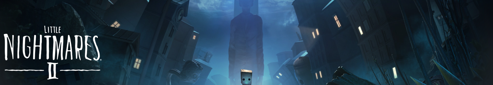
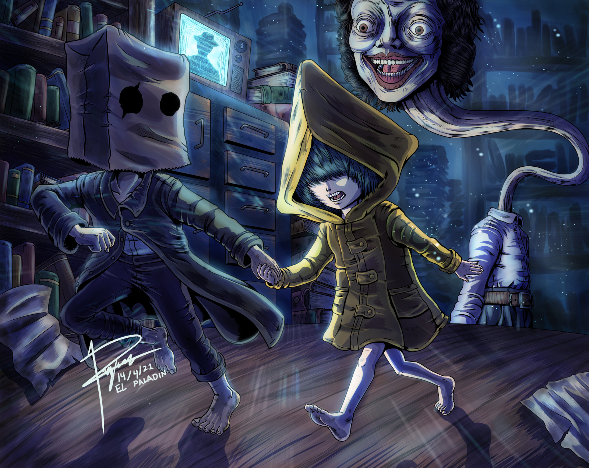
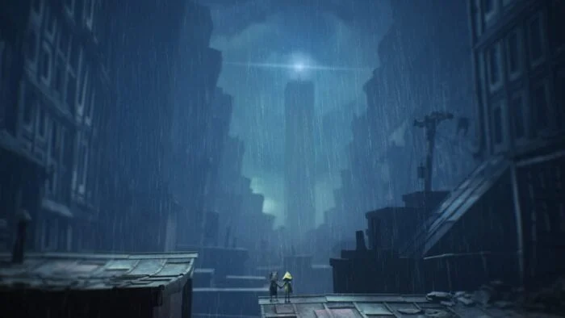

Little Nightmares 2 is a short, interesting, and atmospheric puzzle horror game.
You play as a kind of shrunken down child in a large scary adult nightmare world. You and your ai partner travel through various horror setting (hospital, boarding school, cabin in the woods, etc) as you try to escape the many horrors trying to kill you.
The controls are very simple and the gameplay makes good use of them to create puzzles that are just right for me. Not too hard but do require you to think and experiment a little bit. Some sections I did get a little stuck on but never for long enough for it to become a problem. There was however quite a few frustrating moments where my character would get stuck on something as I tried to run away forcing me to replay the section.
The atmosphere is great in this game. The sound of the rain, the detailed and varied environments, the cloth and object physics really help to immerse you. I'm not usually too bothered about graphics but I think the graphics for this game were really good and add a lot to the style and immersion of the game. Sometimes I'd stop and just watch the rain fall, or slowly walk through an environment instead of sprinting everywhere like in most games.
The story is interesting and I guess one that you need to decide in your own mind whats going on. I didn't play the first one so maybe that explains a little more but something tells me it wouldn't. Theres no real dialog, the story is told through the experiences of the 2 main characters and the animations and events. Whilst I didn't really come away with a concrete understanding of what happened I have a vague idea in my head what it might be about and I'm perfectly happy with that.
It took me 4 hours to complete and only cost around £2.50 so at that price it is well worth it. It definitely has me interested in playing the first one now. Just going to wait for it to go down in price first.


